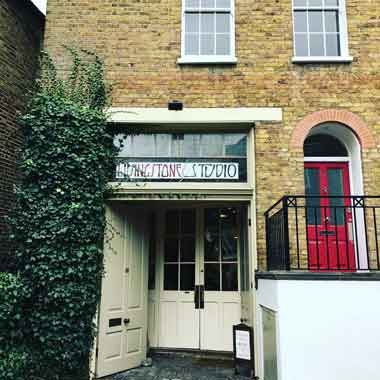
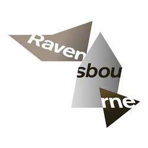

March 2016 - Present, Research Software UI/UX Designer
Involve in project planning, feasibility, product quotes, timebox planning ⊙ Converse with project partners to discuss requirements and project progress ⊙ Find solutions to enhance the project’s digital and research outputs ⊙ Full involvement with design process, prototyping, and some frontend development ⊙ Integrating content management system with designs and functionality ⊙ User, browser and device testing during development process
Trinity Mirror
April 2015 - March 2016, User Interface Designer
April 2012 - April 2015, Web Designer
Work closely with UX, development, product and editorials teams · Research latest digital technology, products and trends ⊙
Develop, design, implement and test new products ⊙
Involvement in Multivariate and A/B testing with UX team ⊙
Collaborate with external third parties and suppliers ⊙ Designed for commercial campaigns and social media marketing ⊙
Built responsive email newsletter templates, landing pages, microsites, digital products ⊙
Worked with editorial and product teams for national and regional titles ⊙
Produced artwork graphics and icons ⊙
Integrated digital products with CMS
Goosewire
May 2011 – March 2012, Digital Designer
Researched for new projects, visualize designs and concepts ⊙
Created print designs and artwork for cards and packaging ⊙
Branding for the company website, business cards, letterheads, packaging, etc. ⊙
Prepared client presentations, working on artwork, layout, typography, infographics, and content ⊙
Produced website wireframes and design, retouching photographs, website maintenance ⊙
Designed and built email templates
Hevika International
May 2010 – April 2011, Knitwear Designer
Identified seasonal fashion trends, colour, and yarn direction ⊙
Designed seasonal knitwear womenswear collection for label “Ekta”, which also include wovens ⊙
Designed artwork for garment labels, tags, letterheads, look books, brochures, and press releases ⊙
Assisted with e-commerce, photography, website updating ⊙
Flat drawings by hand and computer, garment size grading, coordinate samples and production ⊙
Liaised with agents and factories in Hong Kong and India for sampling, development and production
Freelance
Dec 2009 – April 2010, Graphic Designer
Designed logo, business cards, website for Coco, a company that supplies organic cakes and bakes to local bakeries and produce to be sold at Farmers Markets ⊙
Website concept for TellusFashion ⊙
Tended to clients queries via phone, emails, and post ⊙
Liaised with printers and web designers
Sophie Steller
Jul 2005 - Dec 2007, Knitwear Designer
Trend, yarn development, colour and design development ⊙
Managed client projects and production for menswear and womenswear ⊙
Liaise with Far Eastern factories ⊙
Participated in tradeshows. Designed banners, bags, and other marketing graphics ⊙
International travel to New York and Europe to meet clients ⊙
Clients include retailers like Gap, American Eagle, and brands like Ralph Lauren, Hugo Boss

Livingstone Studio
Aug 2004 – Jun 2005, Knitwear Designer
Created concept ideas and designs for womenswear and childrenswear retailers in Taiwan and Japan ⊙
Fashion catwalk trends and colour research along with fabric, trims and yarn sourcing · Knitting sampling and yarn experimentation ⊙
Designed artwork and put together presentation boards for clients
Education
Some of the places that nutured my creativity
Royal College of Art
October 2007 – July 2009
MA Constructed Textiles (Knitted Textiles)

Ravensbourne College of Art and Design
September 2002 - July 2004
BA (Hons) Fashion Design
Surrey Institute of Art & Design
September 2000 - June2001
BTEC Diploma of Art and Design
About
Fueled by a passion for design, I studied Fashion at Ravensbourne College, moved on to Textile Design at the RCA, after working a few years as a knitwear designer. I swapped my career with yarn and needles to pixels and devices, working first as a graphic designer, became more interested in coding and am presently a User Interface designer.
I spend a lot of time researching and developing creative conceptual ideas to produce digital prototypes and products. With a lot of time spent looking at the screen, during my spare time when I need my tactile outlet, I still pick up my needles to craft something but only for my home, family or friends. Soil and seeds are another combination I have grown fond of, with my tiny vegetable plot and indoor plant collection.